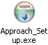

KO Approach features a step-by-step Setup program which guides you through the installation process.

It only takes a few seconds to complete the installation: just double-click Approach_Setup.exe and follow the instructions on the screen.
Note: You must have sufficient access rights for the computer on which KO Approach is being installed in order to run the Setup. On Windows Vista and later you may be asked to perform elevation when starting the installation.
The following topics describe the installation process in detail: